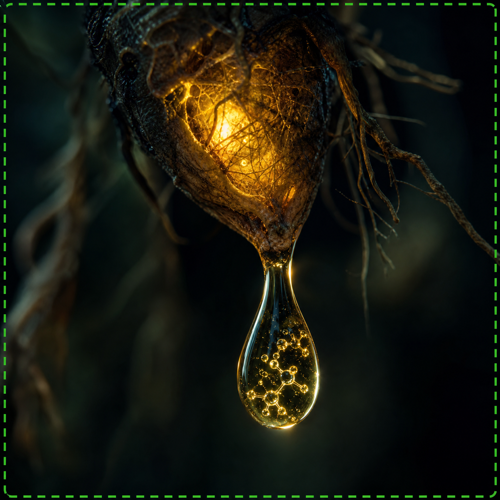

Váš Skrytý Nepriateľ: Metabolický "Slepý Bod" v Boji Proti Cukru
Roky vám hovorili, že vysoký cukor v krvi je nevyhnutnou súčasťou starnutia. Prijali ste diéty, lieky a neustály strach z komplikácií. Ale čo ak je to lož? Čo ak skutočnou príčinou nie je starnutie, ale skrytý metabolický "slepý bod" vo vašom tele, ktorý moderná medicína zámerne ignorovala?
Predstavte si, že sa každé ráno zobudíte plní energie, bez rannej hmly v hlave, a môžete si slobodne vychutnať obľúbené jedlá bez pocitu viny. Toto nie je nedosiahnuteľný sen — je to konkrétna možnosť pre tisíce ľudí, ktorí už túto metódu objavili. Je čas prevziať kontrolu nad svojím životom a zdravím.

"Zlatá Tekutina": Staroveký Objav, Ktorý Mení Pravidlá Hry
V centre tohto neuveriteľného objavu je starodávna, ale dnes znovu objavená "Zlatá Tekutina" — prírodná esencia odovzdávaná po generácie. Nie je to liek, nemá vedľajšie účinky a nevyžaduje žiadne drahé procedúry. Táto tekutina, ak sa správne používa, pôsobí priamo na bunky, reaktivuje ich schopnosť efektívne spracovávať cukor a zlepšuje prirodzenú citlivosť tela.
Nezávislé štúdie ukázali, že táto "Zlatá Tekutina" môže pomôcť stabilizovať hladinu cukru v krvi, znižuje rezistenciu a obnovuje prirodzenú schopnosť tela regulovať cukor. Je to, akoby vaše telo dostalo tlačidlo "reset" — aby opäť fungovalo tak, ako má, čo vám umožní žiť plnohodnotnejší život bez obmedzení, ktoré vám doteraz boli vnucované.
Nedovoľte, Aby Vám Hovorili, Že Niet Nádeje!
Ak ste unavení z prázdnych sľubov a dočasných riešení, ak chcete konečne riešiť koreň problému — a nielen symptómy — potom musíte poznať toto tajomstvo. Nedovoľte, aby vás definoval váš vek alebo váš stav. Zaslúžite si žiť život plný vitality, energie a slobody.
Toto je vaša príležitosť objaviť pravdu. Kliknite na tlačidlo nižšie a získajte prístup k exkluzívnemu videu, ktoré odhalí všetky podrobnosti o tom, ako táto "Zlatá Tekutina" môže transformovať vaše zdravie a vrátiť vám slobodu, o ktorej ste si mysleli, že ste ju navždy stratili. Nečakajte, kým bude príliš neskoro!
KLIKNITE SEM A OBJAVTE TAJOMSTVO STABILNÉHO CUKRU!